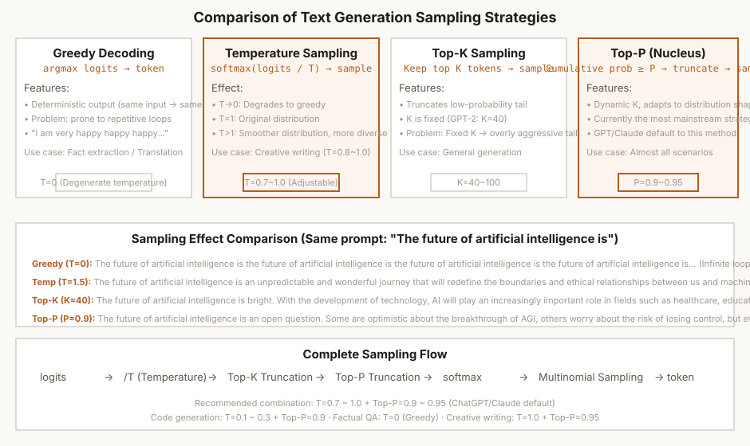

第8章 文本生成
采样策略 + DeepSeek MTP 推测解码——从概率到文本的最后一公里
本章怎么学：生成就是“反复选下一个 token”
- 前置知识：第 6 章 logits、softmax、概率采样。
- 学习目标：解释自回归生成、prefill/decode、采样分布截断、重复陷阱、曝光偏差、推测解码和结构化解码的数学基础。
- 课前阅读：阅读 Holtzman et al. (2020) Nucleus Sampling、speculative decoding 摘要，并复习 categorical sampling。
- 课后阅读：比较 greedy、beam、temperature、top-k、top-p、typical sampling 和约束解码在质量/多样性/可靠性上的取舍。
- 本章产出：一个能用不同采样策略生成文本的 Generator。
- 完成标准：你能解释为什么 temperature 越低越保守、top-p 比 top-k 更自适应。
- 练习产出：提交生成器、采样策略对比表、distinct-n/重复率指标，以及推测解码接受率实验；配套作业见 assignments/ch08_generation/。
8.1 自回归生成的数学原理
经过第 7 章的训练，我们得到了一个能预测下一个 token 的模型。但模型本身只是一个"评分器"：给定前缀，它输出一个概率分布。如何将概率分布转化为实际文本序列，这就是文本生成的核心问题。
自回归分解
生成的数学基础依然是自回归分解——序列的联合概率分解为条件概率的乘积：
每一步，模型基于已有的前缀 ，输出一个词表上的概率分布 。然后从该分布中采样或取最大值得到 。这个过程是逐 token 进行的，直到生成结束 token 或达到最大长度。
Prefilling 与 Decoding 两阶段
生成过程分为两个计算特征完全不同的阶段：
- Prefilling（预填充）：将用户输入的 prompt 一次性送入模型。这是计算密集阶段——大量矩阵乘法并行执行。瓶颈在 GPU 算力（FLOPS）。首 token 延迟（TTFT）由这个阶段主导。
- Decoding（解码）：逐 token 生成，每次只输入一个 token，利用 KV Cache 增量计算。这通常是带宽密集阶段——小 batch 或低并发时 GPU 算力利用率可能明显低于 prefill，后续吞吐（TPS/TPOT）由这个阶段主导。

图 8-1: 四种采样策略对比——从贪心到 Nucleus
8.2 为什么贪心解码会失败？——重复陷阱与曝光偏差
贪心解码（Greedy Decoding）每一步选择概率最高的 token：。它是最简单的策略，但有两个根本缺陷。
缺陷一：重复陷阱（Repetition Loop）
模型一旦进入某个高概率局部模式，后续 argmax 可能持续选择相似或相同 token，尤其在训练数据中常见短语、标点或功能词附近更明显。原因通常是条件分布过于尖锐、上下文里已有重复模式、缺少随机探索和停止约束等因素共同作用；这会让贪心解码陷入重复循环，但不能简单归因于某个 token 的 Key/Query 必然自我强化。
缺陷二：曝光偏差（Exposure Bias）
训练时，模型每一步看到的是真实的 ground truth token。但推理时，模型看到的是自己生成的 token。这两种情况下的分布不同——训练时的条件分布是 ，推理时是 。一步的误差会在后续步中被放大，这就是误差累积（error accumulation）。
温度参数的熵控制视角
解决方案是引入随机性——从概率分布中采样而不是取最大值。温度参数 控制这个随机性的程度：
- ：退化为 argmax（完全确定）
- ：原始分布
- ：退化为均匀分布（完全随机）
温度的"热力学类比"：在 Boltzmann 分布中，温度控制系统的"探索"程度——高温使系统探索更多状态（更多样的词汇），低温使系统利用已知高概率模式（更确定的输出）。
8.3 编程练习 1：实现 Greedy Decoding
虽然贪心解码有缺陷，但它是理解所有其他采样策略的起点。请实现它，然后观察其问题。
练习 1：贪心解码
任务：实现 generate_greedy(model, input_ids, max_new_tokens) 函数。
要求：
- 输入
input_ids: (1, seq_len)，逐 token 生成最多max_new_tokens个新 token - 每一步取 logits 最后一个位置（
logits[:, -1, :]）的 argmax - 检测 EOS token，遇到时提前停止
- 返回完整的 token 序列
# 预期用法
prompt = tokenizer.encode("深度学习是", return_tensors='pt')
output = generate_greedy(model, prompt, max_new_tokens=50)
print(tokenizer.decode(output[0]))
# 可能输出: "深度学习是深度学习是深度学习是..."
💡 观察：即使在小模型上，贪心解码也极其容易陷入重复。注意 logits[:, -1, :] 中的 -1——我们在取"最后一个位置"的 logits，即模型对下一个 token 的预测。
8.4 编程练习 2：实现 Temperature Sampling
温度采样通过在 logits 上应用除法 来控制分布的"锐度"。核心变化是：argmax → softmax + multinomial。
练习 2：温度采样
任务：实现 generate_temperature(model, input_ids, max_new_tokens, temperature)。
要求：
- logits 除以 temperature 后再做 softmax
- 使用
torch.multinomial从分布中采样 - 处理 的特殊情况：退化为 argmax（避免除零）
- 接受相同 prompt 多次运行应产生不同结果（因为随机采样）
# 预期用法
prompt = tokenizer.encode("人工智能的未来", return_tensors='pt')
# 低温: 确定性高
output1 = generate_temperature(model, prompt, 100, temperature=0.2)
# 高温: 多样性高
output2 = generate_temperature(model, prompt, 100, temperature=1.5)
# 不同次运行应不同
output3 = generate_temperature(model, prompt, 100, temperature=0.8)
output4 = generate_temperature(model, prompt, 100, temperature=0.8)
assert output3.tolist() != output4.tolist()
💡 T=0 的处理：当 T→0 时， 会导致数值溢出。实际实现中从不除以真正的 0——T=0 时直接用 argmax，T>0 时才做采样。
8.5 从 Temperature 到 Top-K / Top-P：截断"无聊的尾部"
温度采样虽好，但有一个问题：当词表很大时（如 50257），softmax 的尾部包含大量概率极低的 token。即使使用 ，模型仍有小概率采样到这些"无意义"的 token，生成出一个荒谬的词。Top-K 和 Top-P 就是用来截断这个"无聊的尾部"的。
Top-K 的逻辑
只保留概率最高的 K 个 token，重新归一化后从中采样。K 是一个固定值（GPT-2 默认 K=40）。
Top-K 的固有问题
K 是固定的。在某些上下文中可能只有 3 个合理的选择（K=40 引入了太多噪声），而在另一些上下文中可能有 100 个合理的延续（K=40 截断了太多可能性）。比如：
- "美国的首都是____" —— 分布极度尖锐，"华盛顿"的概率可能超过 90%。K=40 仍然从 40 个 token 中采样，小概率选到"纽约"（明显错误）
- "给她写一首关于____的诗" —— 分布很平缓，K=40 可能过于限制创造力
Top-P (Nucleus) 的自适应解决方案
Top-P（Holtzman et al., 2020）不固定 K，而是选择累积概率达到 P 的最小 token 集合：
- 将 token 按概率从高到低排序
- 从最高概率开始累加，直到累积概率 （典型值 0.9 或 0.95）
- 只从这个"核心集"（nucleus）中采样
当分布尖锐时核心集很小（"华盛顿"的例子可能只有 1-3 个 token），当分布平缓时核心集自动扩大。它不需要手动固定 K，是开放式生成中常见的采样策略之一；实际部署仍会结合 temperature、repetition penalty、stop 条件和任务约束调参。
8.6 编程练习 3-4：实现 Top-K 和 Top-P 采样
练习 3：Top-K 采样
任务：实现 generate_topk(model, input_ids, max_new_tokens, k, temperature)。
要求：
- 用
torch.topk取概率最高的 K 个 logits - 在 Top-K 子集上做 softmax 归一化
- 采样后通过
gather将索引映射回原始词表 ID
# 预期用法
prompt = tokenizer.encode("给我讲一个故事", return_tensors='pt')
output = generate_topk(model, prompt, 100, k=40, temperature=0.8)
练习 4：Top-P (Nucleus) 采样
任务：实现 generate_topp(model, input_ids, max_new_tokens, p, temperature)。
要求：
- 对概率分布降序排序，计算累积概率
- 关键：先用
cumsum >= p标记超过 nucleus 的位置，再将 mask 右移一位——确保第一个达到或超过 p 的 token 被保留，且 nucleus 尽可能小 - mask 后将剩余概率重新归一化（确保求和为 1）
- 从归一化后的分布中采样
# 预期用法
prompt = tokenizer.encode("给我讲一个故事", return_tensors='pt')
output = generate_topp(model, prompt, 100, p=0.9, temperature=0.8)
💡 为什么要右移 mask？cumsum >= p 会标记第一个达到阈值的 token；把 mask 右移一位后，这个 token 被保留，后面的尾部 token 被移除。这样得到的是累计概率达到 p 的最小 nucleus。
8.7 编程练习 5：四种采样策略对比实验
现在把你实现的四种策略放在一起对比。用同一个 prompt 和同一个模型，观察输出差异。同时用定量指标评估质量。
练习 5：策略对比 + 多样性评估
任务：实现 Generator 类，统一封装四种策略。然后用同一个 prompt 生成文本，计算多样性指标。
要求：
Generator类接受 model 和 tokenizer，提供统一的generate(prompt, strategy, ...)接口- 支持四种 strategy：
"greedy","temperature","top-k","top-p" - 对每个策略生成 200 tokens 文本并打印
- 计算并对比每个策略的 distinct-1 和 distinct-2 分数
# 预期输出结构 === Greedy === [生成的文本] distinct-1: 0.12, distinct-2: 0.35 === Temperature (T=0.8) === [生成的文本] distinct-1: 0.28, distinct-2: 0.52 === Top-K (K=40, T=0.8) === [生成的文本] distinct-1: 0.31, distinct-2: 0.58 === Top-P (P=0.9, T=0.8) === [生成的文本] distinct-1: 0.35, distinct-2: 0.61
💡 预期观察：Greedy 往往更容易重复；Top-P 通常会提高候选多样性，但 distinct 分数和人工质量不总是一致。实际部署常把 Top-P、temperature、repetition penalty 和 stop 条件组合调参，不能把单一指标当作质量结论。
8.7A 如何评价生成策略：多样性不是质量，低重复也不是正确
比较 decoding 策略时，最常见的错误是只看一两个样例，或者只报告 distinct-n。生成质量是多目标问题：同一个策略可能提高多样性，同时降低事实性、格式稳定性或可复现性。严谨实验需要把任务类型、采样参数、随机种子、输出长度和评价指标固定下来。
指标分别回答什么问题
| 指标/方法 | 主要回答 | 不能说明 | 适用场景 |
|---|---|---|---|
| distinct-1 / distinct-2 | 输出 n-gram 多样性和重复程度 | 事实正确、逻辑连贯或任务完成 | 开放式生成、退化重复分析 |
| 重复率 / self-BLEU | 模型是否在样本内或样本间重复 | 高重复是否一定错误 | 长文本、故事、对话生成 |
| exact match / F1 / pass@k | 是否完成有明确答案的任务 | 开放式文本的风格和偏好 | QA、抽取、代码、数学短答 |
| 人工偏好或 pairwise ranking | 人类更喜欢哪种输出 | 偏好原因是否来自事实性、风格还是长度 | 对话、摘要、创意写作 |
| 延迟与成本指标 | TTFT、TPOT、tokens/s、每 1M tokens 成本 | 语义质量 | 服务部署和策略调参 |
为什么要做参数 sweep
Temperature、top-k 和 top-p 不是孤立开关。较高 temperature 通常增加熵；较低 top-p 会截断尾部；二者组合后可能互相抵消或放大。一个合理实验应在同一 prompt 集上比较多组参数，例如：
如果只用一个 prompt、一个 seed、一个样例输出下结论，通常不足以说明策略优劣。开放式生成还应保存失败样例：重复循环、提前停止、跑题、事实错误、格式破坏和过度保守都属于不同失败模式。
策略选择的实际判断
- 代码、数学、抽取：优先低温或 beam / pass@k；多样性不是主要目标，正确性和可复现性更重要。
- 创意写作、头脑风暴：可提高 temperature/top-p，但需要监控重复、跑题和安全边界。
- 结构化输出：采样策略不能替代 schema 约束；应优先使用结构化解码或输出校验。
- 在线服务：需要同时看质量和 TPOT/吞吐；高 top-p 可能增加输出长度和后处理失败率。
8.7B Beam Search：搜索多个高概率候选，而不是只走一步最优
Greedy decoding 每一步只保留当前概率最高的 token，容易早早走进局部最优。Beam search 保留 num_beams 条候选路径，每一步把每条路径扩展到若干下一个 token，再按累计 log probability 排序保留前几条。
长度偏置
直接累加 log probability 会天然偏向短序列，因为每多生成一个 token 都会再加一个非正的 log probability。机器翻译、摘要和结构化候选生成里常用长度归一化或 length penalty 缓解这个问题：
Ch08 作业中的 length_normalized_score 和 beam_search 对应这个过程。这里使用的是教学版 batch size 1 实现，目的是让学生看清 beam table、raw score 和 normalized score 的关系。
什么时候用 beam
- 适合：翻译、抽取、代码候选、数学短答、schema 受限输出等有明确目标的任务。
- 不适合盲用：开放式聊天和创意写作中，beam 可能产生高概率但平庸、重复或过短的输出。
- 要报告：beam size、length penalty、最大长度、是否 early stop，以及候选排序指标。
8.7C 推理式生成：用更多 test-time compute 换更高正确率
对数学、代码、规划和多跳问答来说，生成策略不只是“选哪个 token”。模型可能需要先生成中间推理，再选择最终答案。近年的 reasoning 方法可以统一看成一个问题：在训练完成后，是否愿意用更多测试时计算量换取更高的任务成功率。
常见方法
| 方法 | 做法 | 收益来源 | 代价/风险 |
|---|---|---|---|
| Chain-of-Thought | 让模型先写中间步骤再给答案 | 把隐式计算展开成 token 序列 | 步骤可能看似合理但实际错误 |
| Self-consistency | 采样多条推理路径，对最终答案投票 | 降低单一路径偶然错误 | 成本约乘以样本数，投票只适合可聚合答案 |
| Best-of-N | 生成 N 个候选，用奖励模型或规则选择 | 把生成问题变成搜索和重排 | reranker 偏差会选择风格好但事实错的答案 |
| Verifier / Critic | 单独训练或调用模型判断解答是否正确 | 把“会做题”和“会判题”拆开 | 验证器覆盖不足时会放过同类错误 |
| Process supervision | 评价每一步推理而不只评价最终答案 | 更容易定位中间错误 | 标注成本高，步骤粒度难定义 |
为什么它不同于普通 sampling
普通 top-p 或 temperature 主要控制输出分布的熵；reasoning 生成关心的是搜索空间。同一个问题可以生成多条推理路径，每条路径都有自己的中间状态和最终答案。对有标准答案的任务，评价重点不是 distinct-n，而是 pass@k、majority vote accuracy、verifier accuracy、平均输出 token 数和单位正确答案成本。Ch08 作业中的 pass_at_k 使用 1 - C(n-c,k)/C(n,k) 估计从 n 个样本中抽取 k 个至少命中一个正确答案的概率。
计算预算怎么报告
如果一个方法把准确率从 60% 提到 72%，但每题从 1 次生成变成 32 次生成，就不能只报告准确率。至少要同时报告：
- 样本数：
N、temperature、top-p、max reasoning tokens。 - 正确率：single sample、pass@k、majority vote 或 reranked top-1。
- 成本：平均生成 token 数、TTFT/TPOT、每题延迟和每题 token 成本。
- 失败类型：算术错误、条件遗漏、无效代码、错误投票、verifier 误判。
8.8 DeepSeek MTP——多 Token 预测的理论
多 Token 预测（Multi-Token Prediction, MTP）是 DeepSeek-V3 的一项重要技术创新。传统语言模型每次只预测一个未来的 token，而 MTP 让模型一次预测多个未来 token。
训练时的 MTP：多输出头架构
标准语言模型只有一个输出头（LM Head），将最后一层隐藏状态 映射到词表 logits，预测 。MTP 添加 个额外的输出头（MTP Heads），每个头预测不同偏移的未来 token：
每个 MTP Head 是一个小 MLP + LayerNorm，参数量远小于主 Transformer。它们共享底层特征表示，只在输出层有独立参数。
双重增益
- 训练增益：更密集的监督信号。每个 token 位置不仅要预测下一个 token，还要预测下下个 token。这可能促使模型学习更长距离的依赖。DeepSeek-V3 报告给出过 MTP 带来的训练效率收益；具体幅度依赖模型、数据和训练设置，正文不把它外推为通用比例。
- 推理增益：MTP Head 在推理时可以作为推测解码的草稿模型。由于 MTP Head 的参数远小于完整 Transformer，它们可以快速生成候选 token，然后由主模型一次性验证。
8.9 编程练习 6：实现简化版推测解码
推测解码（Speculative Decoding）的核心思想非常巧妙：用一个小模型（草稿模型）快速生成候选 tokens，然后由大模型（目标模型）并行验证这些候选。满足拒绝采样条件时，它可以保持目标模型采样分布；实际加速比取决于草稿模型速度、接受率、batching 和系统瓶颈，论文与系统报告中常见约 1.x 到数倍的提升。
算法流程
- 草稿阶段：用轻量草稿模型（如 100M）自回归生成 个候选 token（通常 或 5）
- 验证阶段：将候选 tokens + 前缀送入目标模型（如 7B），一次 forward 获得所有位置的 logits
- 拒绝采样：逐位置检查目标/草稿模型的概率分布——分歧过大则拒绝，从修正分布中重新采样
- 接受：被接受的 token 和重新采样的 token 一起加入输出序列
练习 6：实现推测解码
任务：实现 speculative_decoding(target_model, draft_model, tokenizer, input_ids, gamma=4)。
要求：
- 草稿模型用 Top-P 采样生成
gamma个候选 token - 目标模型验证：一次 forward 计算所有候选位置的目标概率和草稿概率
- 拒绝采样：以
min(1, p_target / p_draft)的概率接受每个候选 - 被拒绝时从
max(0, p_target - p_draft)重新采样 - 全部接受则额外从目标模型采样一个 token
# 预期用法
output = speculative_decoding(
target_model=model_7b, # 大模型
draft_model=model_100m, # 小模型
tokenizer=tokenizer,
input_ids=prompt,
gamma=4,
)
print(f"生成 {output.size(1)} tokens")
💡 分布保持分析：在草稿/目标概率、采样温度和拒绝采样实现都满足论文假设时，最终输出分布可与直接用目标模型采样保持一致。加速比可用 作一阶估算，其中 ；真实收益还取决于接受率、batching、kernel 和服务调度。
8.10 上下文窗口与 Attention Sink
上下文窗口是模型在一次生成中能"看到"的最大 token 数量。为什么越长越好？
- 长程依赖：小说的伏笔需要数百页后揭晓；函数定义在文件开头、调用在末尾。更长的上下文意味着更好的跨段落推理。
- 少样本学习：prompt 中放入更多示例（in-context examples），模型表现更好。上下文越长，可容纳的示例越多。
- 多轮对话：保持完整的对话历史。128K 窗口约可容纳 10 万字对话历史。
Attention Sink
近期的研究发现了一个有趣的现象——在长序列中，模型会将大量的注意力权重分配给初始 token（通常是 <BOS> 或句首 token），即使这些 token 与当前生成的内容无关。这被称为 Attention Sink（Xiao et al., 2024）。
成因：训练时序列长度有限（如 4K），模型会产生"残差注意力偏移"——初始 token 吸收了多余的注意力分数。当推理时序列变长，这种偏移被放大，模型浪费大量注意力在无关的早期 token 上。
上下文窗口示例
| 模型/报告示例 | 公开规格示例 | 教学用途 |
|---|---|---|
| GPT-4 系列长上下文版本 | 百 K 级上下文 | 说明产品规格会随版本和 API 变化 |
| Claude 3 系列 | 约 200K 级上下文 | 说明长上下文仍受价格、延迟和召回质量约束 |
| Gemini 1.5 Pro | 百万级上下文公开案例 | 说明 context length 不等于稳定检索能力 |
| DeepSeek-V4 模型卡 | 模型卡报告 1M context | 说明前沿模型规格必须带来源和日期 |
8.11 本章总结
- ✅ 自回归生成原理 — Autoregressive decomposition of P(x), Prefilling vs. Decoding
- ✅ 编程练习 1：Greedy Decoding — argmax 策略，暴露重复陷阱和曝光偏差
- ✅ 编程练习 2：Temperature Sampling — 温度控制分布熵，T→0 退化为贪心
- ✅ 编程练习 3：Top-K Sampling — 固定 K 截断，缺点是无法自适应
- ✅ 编程练习 4：Top-P (Nucleus) Sampling — 累积概率动态截断，开放式生成常用策略之一
- ✅ 编程练习 5：策略对比 — 统一 Generator 类 + distinct-n 定量评估
- ✅ 生成评估边界 — 区分多样性、质量、事实性、延迟和任务完成率
- ✅ 推理式生成 — CoT、self-consistency、best-of-N、verifier 和 test-time compute 取舍
- ✅ 编程练习 6：Speculative Decoding — 草稿 + 验证 + 拒绝采样，理解分布保持加速的适用条件
- ✅ MTP 理论 — 多输出头，训练/推理双重增益
- ✅ 上下文窗口与 Attention Sink
8.12 结构化解码——JSON 模式与约束生成
在 API 和 Agent 场景中，我们通常需要 LLM 输出特定格式的结构化数据（JSON、YAML），而不是自由文本。让 LLM "尽量输出 JSON"是不够的——它偶尔会输出不完整的 JSON 或多余的文本。
约束解码原理
约束解码在采样的每一步根据目标语法动态修改 logits：将不符合语法的 token 概率设为 -inf，确保生成符合指定格式。
实现：基于 JSON Schema 的 Token 过滤
以 JSON 为例：将 JSON Schema 编译为确定性有限自动机（DFA）。每一步解码时，将词表中每个 token 喂入 DFA 判断是否合法——只有合法 token 可被采样。例如前缀为 {"name": 时，下一个 token 必须是 "。
主流工具
| 工具 | 原理 | 支持引擎 |
|---|---|---|
| Outlines | JSON Schema → 索引，高效 token 过滤 | vLLM, llama.cpp |
| guidance | 正则自动机，每步过滤 token | HuggingFace, vLLM |
| OpenAI Structured Outputs | 服务端结构化输出能力，提高 schema 遵循率；应用侧仍应校验 | OpenAI API |
| SGLang | RadixAttention + 原生约束解码 | SGLang |